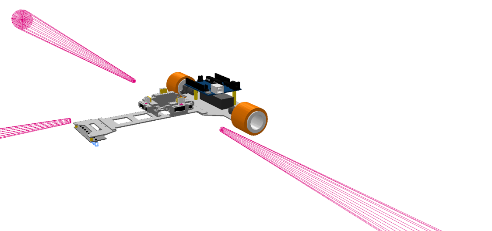
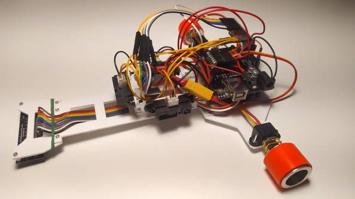

05 / Bachelor’s thesis · 2023
Mobile robot
simulation.
A bachelor’s thesis focused on autonomous mobile robot navigation, combining line following with obstacle avoidance. The project included the software architecture required to operate the robot.


Autonomous mobile robot
The project combines line following with obstacle avoidance. A defined software structure coordinates the robot behavior, making it possible to test the system before running it on the physical platform.
My contributions
- Software architecture design.
- Line-following system.
- Obstacle avoidance.
- Robot control logic.
- System implementation and testing.